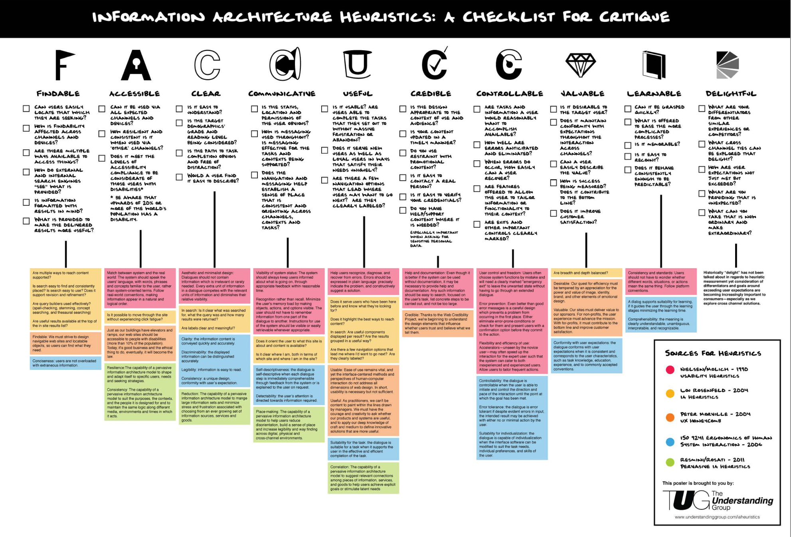

Som miljøbevidst person vil jeg se hvor meget CO2 mine madvarer udleder, så jeg kan få en bedre idé om mit eget klimaaftryk.
User story er en agilt værktøj, som bruges til at beskrive brugerens software funktion fra deres perspektiv. User story beskriver typen af bruger, hvad de ønsker og hvorfor.
Med det sagt, er grunden til vi har valgt at bruge user story fordi det er med til at skabe en enkel beskrivelse af de krav, som vi har til hjemmesiden.
Lene er 53 år, ene mor til 2 og pædagog. De seneste års miljødebat har gjort hende interesseret i hendes eget forbrugs påvirkning på miljøet, men hun ved ikke hvilke madvarer hun skal spise mere eller mindre af, hvis hun skal mindske hendes CO2 udledning. Lene og børnene kan godt lide at spise ude, så det gør de ca. 2 gange i måneden. De elsker alle at tilbringe tid i sofaen en lørdag aften med snolder.
Henrik er 55 år og professor på CBS. Før i tiden var Henrik ligeglad med miljøet, kørte rundt i BMW 5 serie med V8 motor. Henrik er glad for at rejse, og hver gang muligheden bød sig, pakkede han kufferten og tog ud at rejse. Henrik er fraskilt, og bruger aktivt tinder, som går rigtig godt for ham. Henrik har sågar engang inviteret en dame med til Thailand. I dag kører Henrik rundt i en Tesla, spiser kun økologisk og vegansk, som han får leveret til døren igennem "HelloFresh". Henrik følger dagligt med i klimadebatten og siger at han er godt klar over hvilken effekt hans madvaner har på klimaet, men han mangler en form for udregner til det, da det kan være bøvlet at holde styr på.
De skal kunne vælge en pakke oksekød, og tydeligt se hvor meget Co2 aftrykket er, så brugeren ikke er i tvivl.
Det er vigtigt at brugerne skal kunne stole på den information der er tilgængelig i vores visualisering, så de pålideligt kan regne med at deres klimaaftryk er som visualiseringen påstår.
Det er vigtigt at dataen hurtigt kan opfattes, samtidig med at der er læringsværdi i den information der fremstilles
Vores ide er brugbar eftersom, folk der går op i Co2 nemt og simpelt skal kunne finde den data de skal bruge på div. madvare.
Vores visualisering skal skabe værdi for brugeren, da vi ikke er den eneste hjemmeside der skaber overblik over ens Co2 produktion (baseret på ens madvarer).
Beskriver forholdet mellem et objekt og en bruger. Det beskriver de handlinger en bruger kan opfatte og udføre. Ved at bevæge musen over en søjle i diagrammet er det muligt at se det specifikke CO2 niveau, som ellers kan være svært at aflæse præcist.
Alle affordances er ikke åbenlyse og derfor bruges signifiers til at understrege hvilke handlinger der er mulige og hvordan funktioner evt. bør bruges. Det skal være tydeligt at man kan indsætte sin egen ret og sammenligne den med de prædefinerede retter.